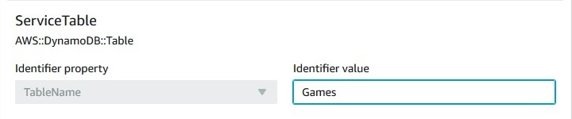

Terjemahan disediakan oleh mesin penerjemah. Jika konten terjemahan yang diberikan bertentangan dengan versi bahasa Inggris aslinya, utamakan versi bahasa Inggris.
Mengimpor sumber daya yang ada ke dalam tumpukan
Selama operasi impor ini, Anda perlu memberikan berikut.
-
Templat yang menggambarkan seluruh tumpukan, termasuk kedua sumber daya yang sudah menjadi bagian dari tumpukan dan sumber daya untuk mengimpor. Setiap sumber daya untuk diimpor harus memiliki DeletionPolicyatribut di template Anda.
-
Pengidentifikasi unik untuk setiap sumber daya target. Kunjungi konsol layanan yang sesuai untuk mendapatkan pengidentifikasi unik.
Dalam panduan ini, kami menyediakan contoh template berikut, disebut TemplateToImport.json. ServiceTable yang saat ini merupakan bagian dari tumpukan, dan GamesTable adalah target impor.
{ "AWSTemplateFormatVersion": "2010-09-09", "Description": "Import test", "Resources": { "ServiceTable": { "Type": "AWS::DynamoDB::Table", "Properties": { "TableName": "Service", "AttributeDefinitions": [ { "AttributeName": "key", "AttributeType": "S" } ], "KeySchema": [ { "AttributeName": "key", "KeyType": "HASH" } ], "ProvisionedThroughput": { "ReadCapacityUnits": 5, "WriteCapacityUnits": 1 } } }, "GamesTable": { "Type": "AWS::DynamoDB::Table", "DeletionPolicy": "Retain", "Properties": { "TableName": "Games", "AttributeDefinitions": [ { "AttributeName": "key", "AttributeType": "S" } ], "KeySchema": [ { "AttributeName": "key", "KeyType": "HASH" } ], "ProvisionedThroughput": { "ReadCapacityUnits": 5, "WriteCapacityUnits": 1 } } } } }
Impor sumber daya yang ada ke dalam tumpukan menggunakan AWS Management Console
catatan
AWS CloudFormationKonsol tidak mendukung penggunaan fungsi intrinsik Fn: :Transform saat mengimpor sumber daya. Anda dapat menggunakan AWS Command Line Interface untuk mengimpor sumber daya yang menggunakan fungsi intrinsik Fn: :Transform.
Masuk ke AWS Management Console dan buka konsol AWS CloudFormation di https://console.aws.amazon.com/cloudformation
. -
Pada halaman Tumpukan, pilih tumpukan yang sumber dayanya ingin Anda impor.
-
Pilih Tumpukan tindakan, lalu pilih Impor sumber daya ke tumpukan.

-
Tinjau halaman Gambaran umum impor, dan kemudian pilih Selanjutnya.
-
Di halaman Tentukan templat, berikan templat Anda yang telah diperbarui menggunakan salah satu metode berikut, lalu pilih Selanjutnya.
-
Pilih URL Amazon S3, lalu tentukan URL untuk templat Anda di kotak teks.
-
Pilih Unggah file templat, lalu telusuri templat Anda.
-
-
Di halaman Identifikasi sumber daya, identifikasi setiap sumber daya target.
-
Di bawah Properti pengidentifikasi, pilih jenis pengidentifikasi sumber daya. Misalnya, sumber daya
AWS::DynamoDB::Tabledapat diidentifikasi menggunakanTableNameproperti. -
Di bawah Nilai pengidentifikasi, ketikkan nilai properti yang sebenarnya. Misalnya,
TableNameuntukGamesTablesumber daya di templat contoh adalahGames -
Pilih Berikutnya.
-
-
Pada halaman Tentukan detail tumpukan, perbarui parameter apapun, dan kemudian pilih Selanjutnya. Ini secara otomatis membuat set perubahan.
catatan
Operasi impor gagal jika Anda mengubah parameter yang sudah ada yang memulai operasi membuat, memperbarui, atau menghapus.
-
Pada halaman Tinjau
nama tumpukan, tinjau sumber daya untuk mengimpor, dan kemudian pilih Sumber daya impor. Ini secara otomatis mengeksekusi perubahan set yang dibuat pada langkah terakhir. Semua tanda stack-level diterapkan pada sumber daya yang diimpor saat ini. Untuk informasi selengkapnya, lihat Mengatur opsi tumpukan AWS CloudFormation.Halaman Peristiwa untuk menampilkan tumpukan.

-
(Opsional) Jalankan deteksi drift pada tumpukan untuk memastikan templat dan konfigurasi sebenarnya cocok dengan sumber daya yang diimpor. Untuk informasi lebih lanjut tentang mendeteksi penyimpangan, lihat. Mendeteksi penyimpangan di seluruh tumpukan CloudFormation
-
(Opsional) Jika sumber daya yang diimpor tidak cocok dengan konfigurasi templat yang diharapkan, perbaiki konfigurasi templat atau perbarui sumber daya secara langsung. Untuk informasi selengkapnya tentang mengimpor sumber daya hanyut, lihat. Mengatasi penyimpangan dengan operasi impor
Impor sumber daya yang ada ke dalam tumpukan menggunakan AWS CLI
-
Jalankan secara opsional
GetTemplateSummaryuntuk mempelajari properti mana yang mengidentifikasi setiap jenis sumber daya dalam templat. Misalnya, sumber dayaAWS::DynamoDB::Tabledapat diidentifikasi menggunakanTableNameproperti. UntukGamesTablesumber daya dalam templat contoh, nilaiTableNameadalahGames.>aws cloudformation get-template-summary --template-url https://DOC-EXAMPLE-BUCKET.s3.us-west-2.amazonaws.com/TemplateToImport.json -
Buat daftar sumber daya untuk mengimpor dan pengidentifikasi uniknya dalam format berikut.
[{\"ResourceType\":\"AWS::DynamoDB::Table\",\"LogicalResourceId\":\"GamesTable\",\"ResourceIdentifier\":{\"TableName\":\"Games\"}}] -
Buat set perubahan tipe
IMPORTdengan parameter berikut.--resources-to-importtidak mendukung YAMAL sebaris.>aws cloudformation create-change-set --stack-nameTargetStack--change-set-nameImportChangeSet--change-set-typeIMPORT--resources-to-import "[{\"ResourceType\":\"AWS::DynamoDB::Table\",\"LogicalResourceId\":\"GamesTable\",\"ResourceIdentifier\":{\"TableName\":\"Games\"}}]" --template-url https://DOC-EXAMPLE-BUCKET.s3.us-west-2.amazonaws.com/TemplateToImport.jsonAWS CLI juga mendukung file teks sebagai input untuk parameter
resources-to-import, seperti yang ditunjukkan dalam contoh berikut.--resources-to-import:file://ResourcesToImport.txtDalam panduan ini,
file://ResourcesToImport.txtberisi yang berikut ini.[ { "ResourceType":"AWS::DynamoDB::Table", "LogicalResourceId":"GamesTable", "ResourceIdentifier": { "TableName":"Games" } } ] -
Tinjau perubahan yang ditetapkan untuk memastikan sumber daya yang benar akan diimpor.
>aws cloudformation describe-change-set --change-set-nameImportChangeSet--stack-nameTargetStack -
Eksekusi perubahan yang ditetapkan untuk mengimpor sumber daya. Semua tag tingkat tumpukan diterapkan pada sumber daya yang diimpor saat ini. Untuk informasi selengkapnya, lihat Mengatur opsi tumpukan AWS CloudFormation. Setelah berhasil menyelesaikan operasi
(IMPORT_COMPLETE), sumber daya berhasil diimpor.>aws cloudformation execute-change-set --change-set-nameImportChangeSet--stack-nameTargetStack -
(Opsional) Jalankan deteksi drift pada
IMPORT_COMPLETEtumpukan untuk memastikan templat dan konfigurasi sebenarnya cocok dengan sumber daya yang diimpor. Untuk informasi lebih lanjut tentang mendeteksi penyimpangan, lihat. Mendeteksi penyimpangan di seluruh tumpukan CloudFormation>aws cloudformation detect-stack-drift --stack-nameTargetStack{ "Stack-Drift-Detection-Id" : "624af370-311a-11e8-b6b7-500cexample" }>aws cloudformation describe-stack-drift-detection-status --stack-drift-detection-id624af370-311a-11e8-b6b7-500cexample>aws cloudformation describe-stack-resource-drifts --stack-nameTargetStack -
(Opsional) Jika sumber daya yang diimpor tidak cocok dengan konfigurasi templat yang diharapkan, perbaiki konfigurasi templat atau perbarui sumber daya secara langsung. Untuk informasi selengkapnya tentang mengimpor sumber daya hanyut, lihat. Mengatasi penyimpangan dengan operasi impor